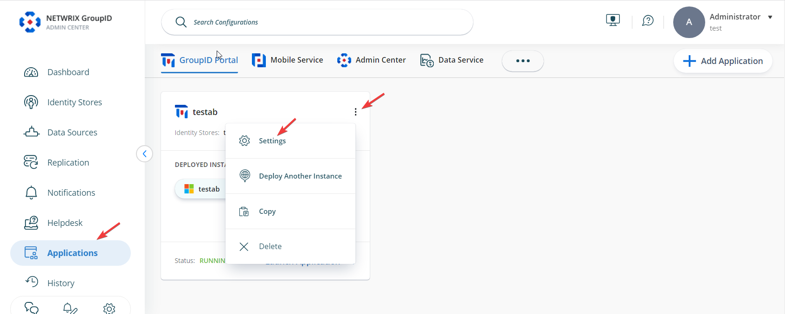
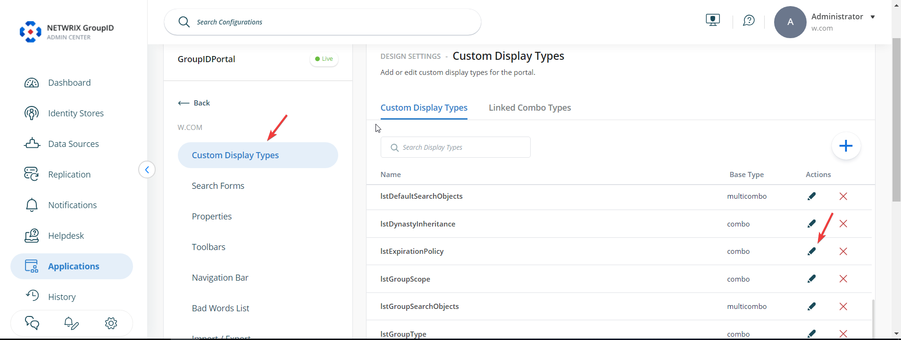
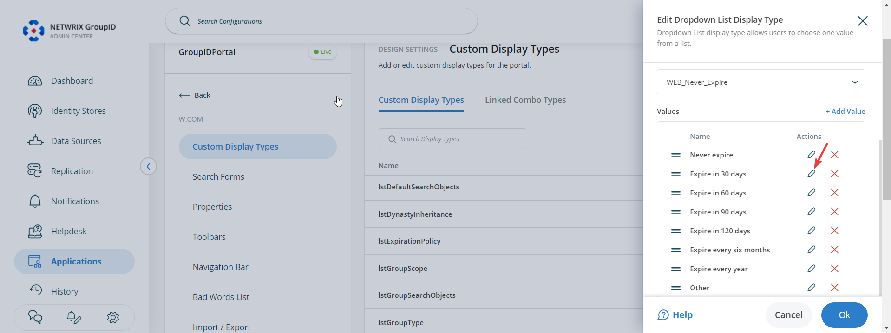
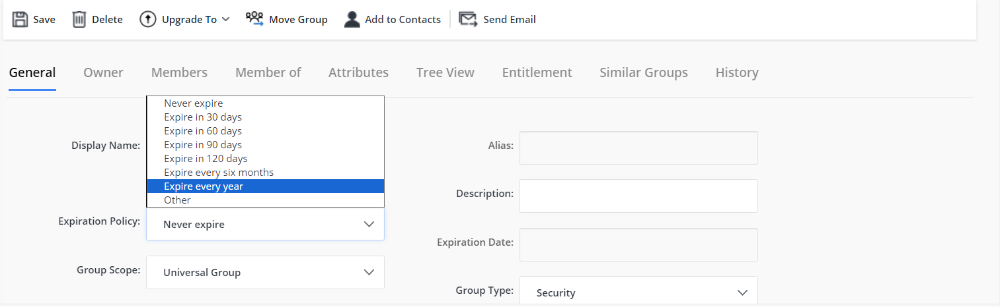
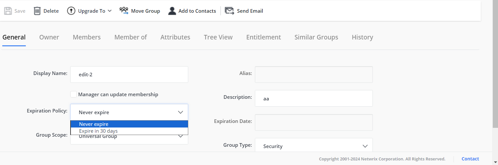
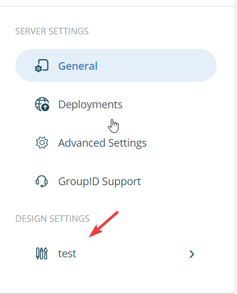
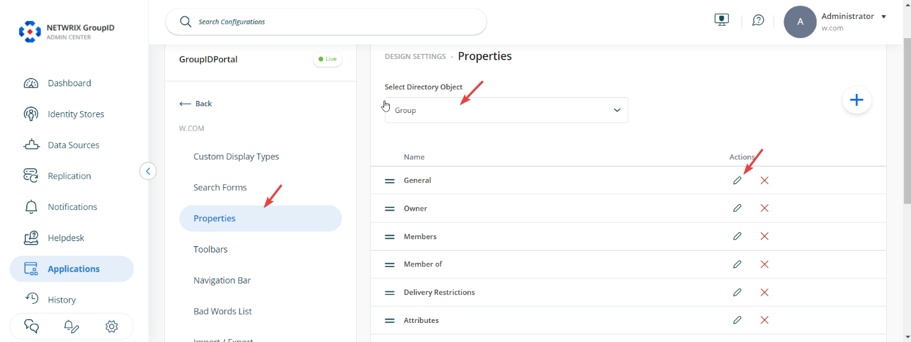
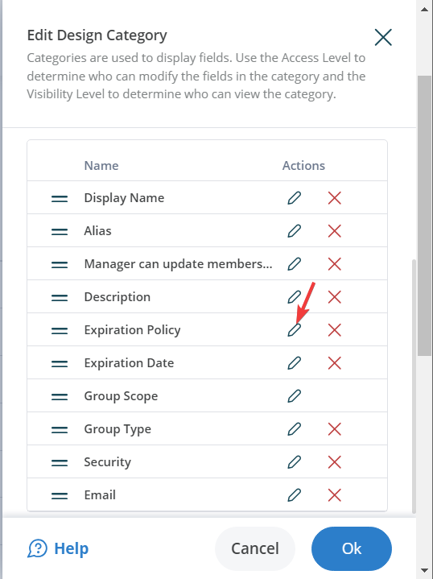
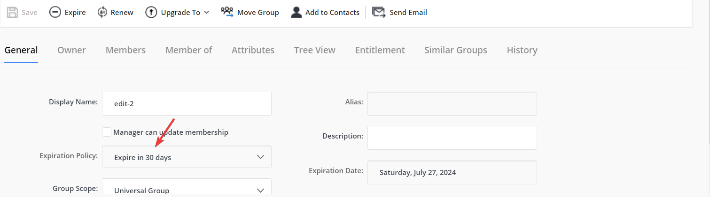

Applies To:
Directory Manager 11
Overview
By default, all expiration policy options are available in the Expiration Policy drop-down list for group properties in Netwrix Directory Manager (formerly GroupID) 11. You can customize which options are visible or make the drop-down list read-only or hidden for specific roles. This article explains how to configure these settings in the portal.
Instructions
Show Specific Options in the Expiration Policy List
-
In Directory Manager Admin Center, go to Applications. Under
Directory Manager Portal, click the three dots (...)
next to your portal and select Settings.
 -
On the Server Settings tab, under Design Settings,
select your portal.

-
On the Custom Display Types tab, select
lstExpirationPolicy and click Edit.
 -
In the Edit Dropdown List Display Type window, select a value in the
Values area and click Edit. The
Values area displays all values defined for the Expiration Policy
drop-down list.
 -
In the Combo Value dialog box, select a visibility level for the value:
- Select a role to make the value visible to users of that role and roles with a higher priority value.
- Select Never to hide the value from all users.
- Click OK to close the Combo Value and Edit Design Type dialog boxes. Then click the Save icon at the bottom to save your changes.
You can set the visibility level for all required values in the Expiration Policy drop-down list.
By default, or if no visibility settings are configured, all expiry options are available
in the Expiration Policy drop-down list:

After applying visibility settings, only the selected values will be available. For
example, if you set Never for all but two values, only those two will appear in
the list:

NOTE: You can also completely hide the Expiration Policy drop-down list or make it read-only.
Make the Expiration Policy Drop-Down List Read-Only
-
In Directory Manager Admin Center, go to Applications. Under
Directory Manager Portal, click the three dots (...)
next to your portal and select Settings.

-
On the Server Settings tab, under Design Settings,
select your portal.
 -
On the Properties tab, select Group in the
Select Directory Object list. Then select the
General option and click Edit.
 -
In the Edit Design Category dialog box, select the
Expiration Policy option in the Fields section and
click Edit.
 -
In the Edit Field dialog box, select a role in the
Access Role list. The access level determines whether a user can change
the value in the Expiration Policy drop-down list.
- Select a role to allow users of that role and roles with a higher priority value to change the value.
- Select Never to make the Expiration Policy drop-down list read-only for all users.
- Alternatively, select the Is Read Only check box to disable the list for all users, so they can view its value but cannot change it.
- Click OK to close the Edit Field and Edit Design Category dialog boxes. Then click the Save icon at the bottom of the page.
The disabled Expiration Policy drop-down list will be displayed in the
portal as shown below. The Expiration Date field is also read-only and
displays the group's expiry date, as calculated based on the expiry policy.
